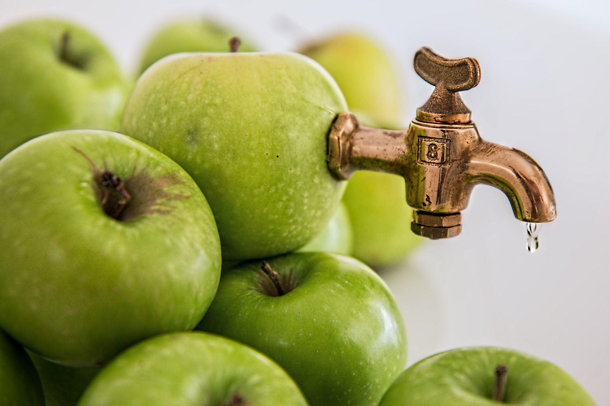
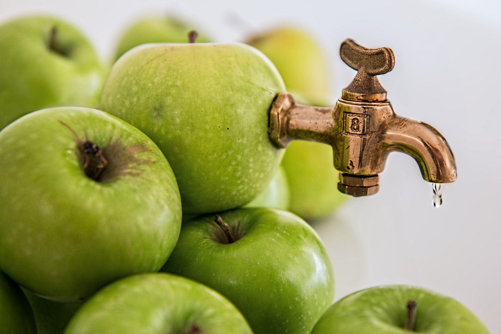
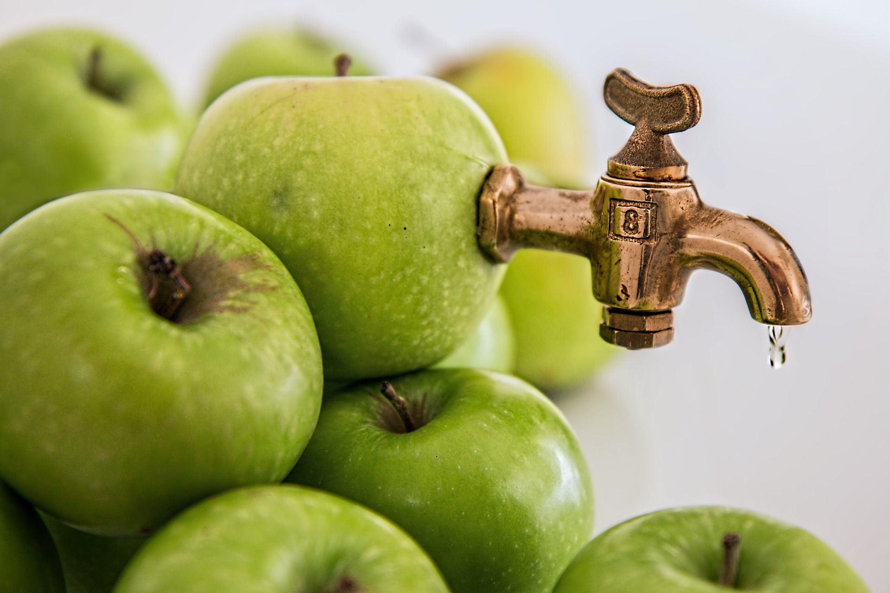
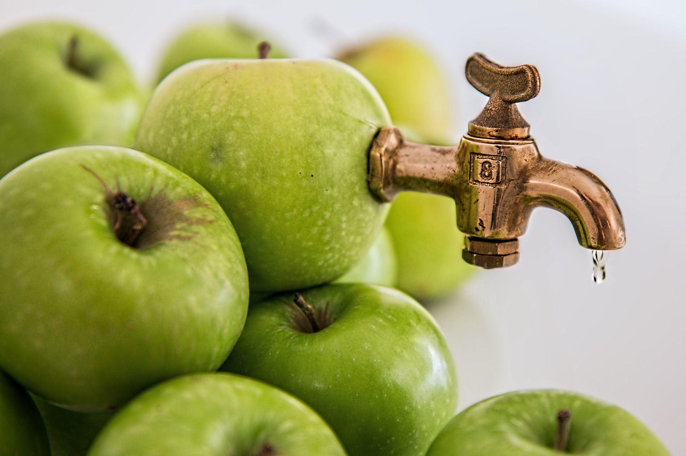

 

Witaj na stronie naszej firmy produkującej świeże i zdrowe soki!Jesteśmy pasjonatami zdrowego stylu życia i chcemy dzielić się z Tobą naszymi przepysznymi sokami, które z pewnością dodadzą Ci energii i poprawią samopoczucie.Wszystkie nasze soki są w 100% naturalne i przygotowywane z najwyższej jakości składników. Dbamy o to, aby nasze owoce i warzywa pochodziły z lokalnych upraw, co zapewnia ich świeżość i wartości odżywcze.Oferujemy szeroki wybór soków owocowych i warzywnych, które można zamówić na dowóz lub odebrać osobiście w naszym punkcie sprzedaży. Nasze soki są również dostępne w sklepach z żywnością zdrową w całym kraju. Oprócz soków oferujemy również zestawy cleanse, czyli kuracje detoksowe, które pomagają oczyścić organizm z toksyn i poprawić trawienie. Nasze zestawy cleanse składają się z różnych soków warzywnych i owocowych, które są przygotowane tak, aby zapewnić organizmowi odpowiednią ilość składników odżywczych i nawodnienie. Ponadto, w naszej ofercie znajdziesz również przepisy na smaczne i zdrowe dania, które możesz przygotować w domu. Wszystkie nasze przepisy opierają się na prostych składnikach i są łatwe do wykonania, nawet dla początkujących kucharzy.
Sałatka owocowa to pyszna i zdrowa przekąska, którą można przygotować w kilka minut. Aby ją zrobić, wystarczy, Pokroić w kostkę ulubione owoce, na przykład jabłka, banany, kiwi, gruszki, truskawki, mango i winogrona. Wymieszać owoce w misce i dodać garść orzechów, takich jak orzechy włoskie, orzeszki ziemne lub migdały. Dodać odrobinę soku z cytryny lub pomarańczy i delikatnie wymieszać, aby owoce nie utraciły swojej konsystencji. Można dodać również łyżkę miodu lub syropu klonowego, aby podkreślić smak owoców. Sałatkę owocową można podać na talerzu lub w misce, posypując ją jeszcze odrobiną orzechów lub posypując cukrem pudrem. Gotowe! Smacznego!
{kind=link}
{kind=link}
{kind=link}